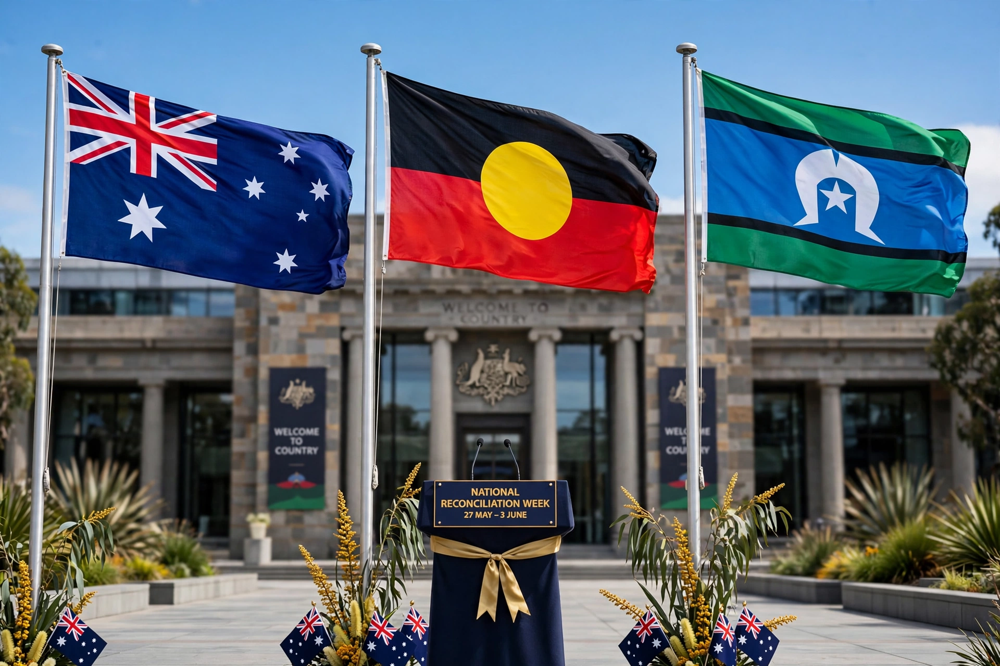

Closing the Gap

Closing the Gap is an Australian government framework, originating in the Close the Gap campaign of 2006–2008, that aims to reduce disadvantage among Aboriginal and Torres Strait Islander peoples in life expectancy, health, education and employment. Formalised by the Council of Australian Governments (COAG) in 2008 through the National Indigenous Reform Agreement, it set measurable targets reported annually to Parliament.
Origins
The framework grew out of the 2005 Social Justice Report of Aboriginal and Torres Strait Islander Social Justice Commissioner Tom Calma, which proposed a 25-year plan to achieve health equality. A coalition of Indigenous and non-Indigenous health and human rights organisations launched the Close the Gap campaign in 2006, and the Rudd government adopted "Closing the Gap" as official policy with COAG targets in 2008.
Original targets
The original targets sought to close the life expectancy gap within a generation, halve gaps in child mortality, reading, writing and numeracy, and employment outcomes, and ensure access to early childhood education. Annual Prime Ministerial reports from 2009 onward charted progress; most targets were not met by their 2018 expiry, with only early childhood education and Year 12 attainment on track at various times.
2020 National Agreement
In July 2020 a new National Agreement on Closing the Gap was signed between Australian governments and the Coalition of Aboriginal and Torres Strait Islander Peak Organisations — the first such agreement developed in partnership with Indigenous representatives. It established four Priority Reforms (shared decision-making, strengthening the community-controlled sector, transforming government organisations, and shared data access) and expanded socio-economic targets covering areas including housing, incarceration rates, children in out-of-home care, and languages — the last a legacy of the Stolen Generations and suppression of Indigenous languages such as those encoding the Dreaming.
Progress and criticism
Productivity Commission annual reports in the 2020s found that only a minority of targets were on track, and a 2024 review concluded that governments had not fully met their commitments under the National Agreement. Indigenous leaders and commentators continue to debate the adequacy of funding, implementation and structural reform.